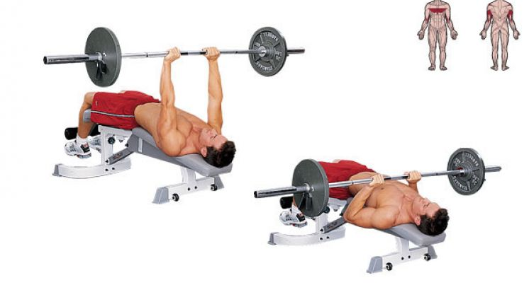

Close Grip Bench Press
- Equipment Needed:
- Barbell
- Weight Plates
- Bench
- Weight Rack
- Steps to perform:
- Load bar with weight while bar is on rack
- Lay down onto bench
- Grab bar just inside shoulder width
- Unrack weight
- Lower bar down to chest, keeping elbows tucked in
- Press bar back up away from chest until arms are locked out, and repeat until you have reached the desired amount of reps